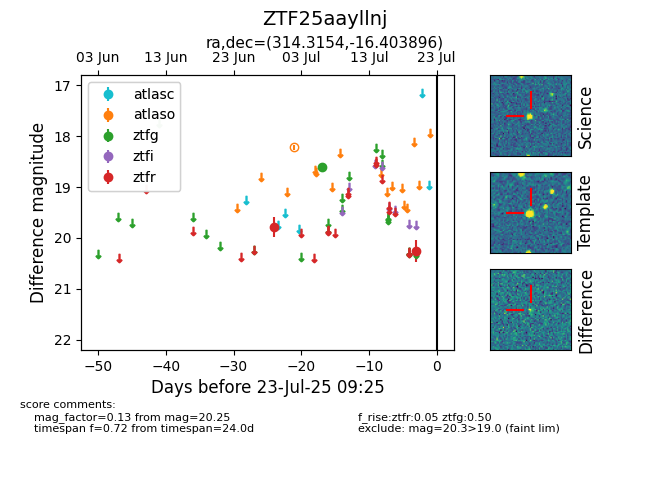

Target ZTF25aayllnj at 2025-07-23 11:52, see:
FINK: fink-portal.org/ZTF25aayllnj
Lasair: lasair-ztf.lsst.ac.uk/objects/ZTF25aayllnj
ALeRCE: alerce.online/object/ZTF25aayllnj
alt names
ZTF25aayllnj (ztf,fink)
coordinates:
equatorial (ra, dec) = (314.3154,-16.40390)
galactic (l, b) = (31.3169,-35.05074)
photometry
last ztfg=18.60, ztfr=20.25
1 ztfg, 2 ztfr detections
